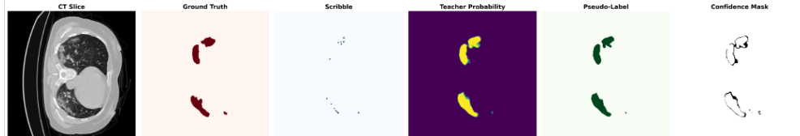
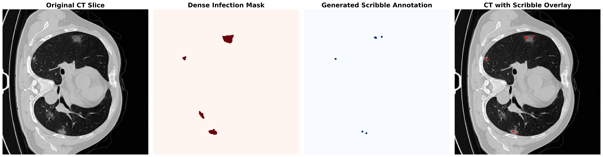
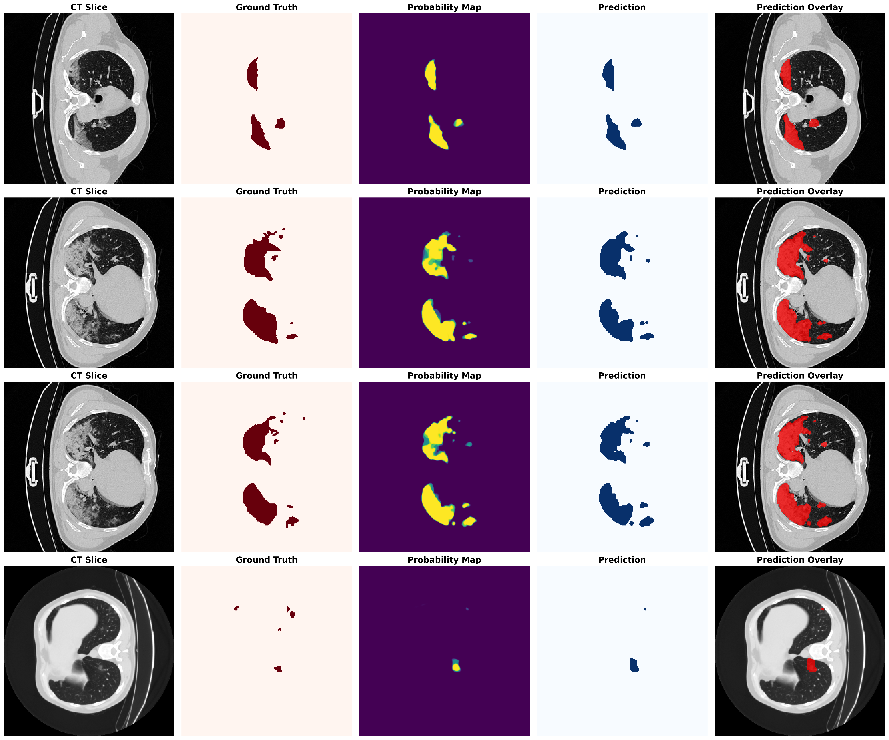

Research manuscript
CASR-Net.
Confidence-aware learning from sparse lesion scribbles.
The research
question.
How can confidence-aware refinement turn sparse scribble supervision into useful lung-lesion masks?
Abstract / research summary
CASR-Net investigates confidence-aware scribble refinement for lung-lesion segmentation in chest CT. Sparse foreground and background scribbles are combined with teacher probability maps to construct selective pseudo-labels. A student model then learns with confidence-weighted supervision and consistency. The reported experiments use scribbles generated from dense masks and a teacher trained with dense labels, so the work studies a weakly supervised student within a teacher-assisted pipeline.
Inside the
method.
- 01
Construct sparse supervision
Generate foreground and background scribbles from the available masks for controlled experiments.
- 02
Refine with confidence
Use teacher probabilities and confidence selection to build more reliable pseudo-labels.
- 03
Train the student
Combine sparse supervision with confidence-weighted consistency and evaluate lesion overlap.
What the
results show.
For Dataset 2, the repository reports Dice scores of 0.1387 for a foreground-scribble-only baseline, 0.5769 with foreground and background scribbles, and 0.7879 for CASR-Net. These comparisons examine the benefit of additional supervision and refinement within the reported setup.
| Evaluation | Dice | IoU |
|---|---|---|
| Dataset 1 validation | 0.8046 | 0.7165 |
| Dataset 2 validation | 0.7879 | 0.6501 |
Repository-reported validation results. Dataset names follow the repository. Dense labels are used to generate scribbles and train the teacher.
Research in view.
Select a figure to explore it.


View full figure

View full figure

View full figureThe complete
work.
CASR-Net: Confidence-Aware Scribble Refinement for Weakly Supervised Lung Lesion Segmentation in Chest CT
CASR-Net: Confidence-Aware Scribble Refinement for Weakly Supervised Lung Lesion Segmentation in Chest CT. Research manuscript.
Methods, validation metrics, and qualitative figures are summarized from the author’s public segmentation repository.